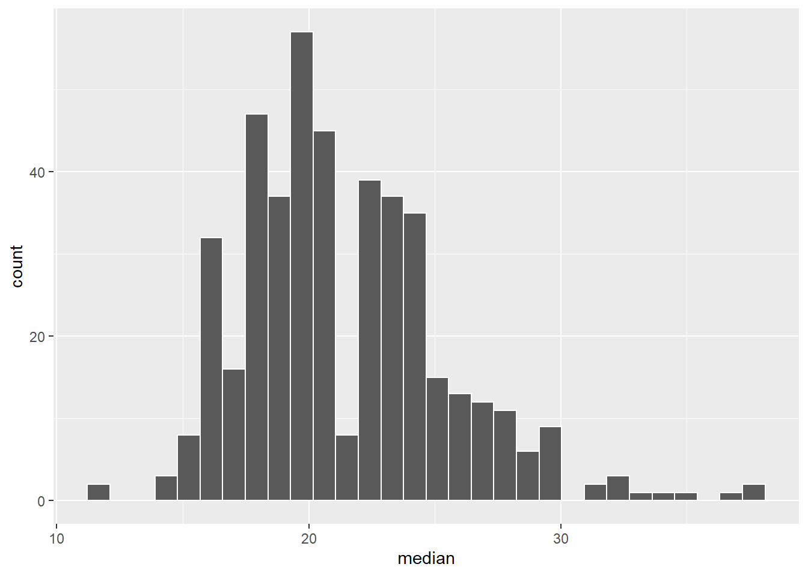

class enrollment
1 STAT 101 18
2 ART 101 17
3 GEOL 101 24
# both datasets have the variable "class"# students_1 exclusively has the variable "student" and enrollments_1 exclusively has the variable "enrollment"# also some classes are different between the 2 datasets
18.1.2 Example 2
# using left_join()library(tidyverse)
── Attaching core tidyverse packages ──────────────────────── tidyverse 2.0.0 ──
✔ dplyr 1.1.4 ✔ readr 2.1.5
✔ forcats 1.0.0 ✔ stringr 1.5.1
✔ ggplot2 3.5.1 ✔ tibble 3.2.1
✔ lubridate 1.9.4 ✔ tidyr 1.3.1
✔ purrr 1.0.2
── Conflicts ────────────────────────────────────────── tidyverse_conflicts() ──
✖ dplyr::filter() masks stats::filter()
✖ dplyr::lag() masks stats::lag()
ℹ Use the conflicted package (<http://conflicted.r-lib.org/>) to force all conflicts to become errors
students_1 |>left_join(enrollments_1)
Joining with `by = join_by(class)`
student class enrollment
1 A STAT 101 18
2 B GEOL 101 24
3 C ANTH 101 NA
# students_1 is the original table (left columns) and enrollments_1 is the added table (it's unique columns are added to the right)# switch orderenrollments_1 |>left_join(students_1)
Joining with `by = join_by(class)`
class enrollment student
1 STAT 101 18 A
2 ART 101 17 <NA>
3 GEOL 101 24 B
# since enrollments_1 has different classes from students_1, the classes included are different# also using left_join() with students_1 puts it on the right of enrollments_1
Example 3
# using inner_join()students_1 |>inner_join(enrollments_1)
Joining with `by = join_by(class)`
student class enrollment
1 A STAT 101 18
2 B GEOL 101 24
# puts the variable in common (class) in the middle, with students_1 on the left and enrollments_1 on the right# only takes rows where there is data from both datasetsenrollments_1 |>inner_join(students_1)
Joining with `by = join_by(class)`
class enrollment student
1 STAT 101 18 A
2 GEOL 101 24 B
Exercise 4
# using full_join()students_1 |>full_join(enrollments_1)
Joining with `by = join_by(class)`
student class enrollment
1 A STAT 101 18
2 B GEOL 101 24
3 C ANTH 101 NA
4 <NA> ART 101 17
# includes all rows, even those missing data in certain datasetsenrollments_1 |>full_join(students_1)
Joining with `by = join_by(class)`
class enrollment student
1 STAT 101 18 A
2 ART 101 17 <NA>
3 GEOL 101 24 B
4 ANTH 101 NA C
Exercise 5
# using semi_join()students_1 |>semi_join(enrollments_1)
Joining with `by = join_by(class)`
student class
1 A STAT 101
2 B GEOL 101
# didn't get data from enrollments_1 and only kept columns that are a match in both datasetsenrollments_1 |>semi_join(students_1)
Joining with `by = join_by(class)`
class enrollment
1 STAT 101 18
2 GEOL 101 24
Example 6
students_1 |>anti_join(enrollments_1)
Joining with `by = join_by(class)`
student class
1 C ANTH 101
# gets the rows not in the right datasetenrollments_1 |>anti_join(students_1)
# join# eval = FALSE: don't evaluate this chunk when knitting. it produces an error.# there is no variable/column in both datasets (class or course is labeled differently in both sets)# students_2 |> # left_join(enrollments_2)
student class enrollment
1 D COMP 101 19
2 E BIOL 101 20
3 F POLI 101 NA
# The order of the keys is important:# join_by("left data key" == "right data key")# The order is mixed up here, thus we get an error:# students_2 |> # left_join(enrollments_2, join_by(course == class))
Part c
# Add student grades in each coursestudents_3 <-data.frame(student =c("Y", "Y", "Z", "Z"),class =c("COMP 101", "BIOL 101", "POLI 101", "COMP 101"),grade =c("B", "S", "C", "A"))# Check it outstudents_3
student class grade
1 Y COMP 101 B
2 Y BIOL 101 S
3 Z POLI 101 C
4 Z COMP 101 A
# Add average grades in each courseenrollments_3 <-data.frame(class =c("ART 101", "BIOL 101","COMP 101"),grade =c("B", "A", "A-"),enrollment =c(20, 18, 19))# Check it outenrollments_3
class grade enrollment
1 ART 101 B 20
2 BIOL 101 A 18
3 COMP 101 A- 19
students_3 |>left_join(enrollments_3)
Joining with `by = join_by(class, grade)`
student class grade enrollment
1 Y COMP 101 B NA
2 Y BIOL 101 S NA
3 Z POLI 101 C NA
4 Z COMP 101 A NA
Part d
# issue: the datasets have 2 column names in common# solution: specify that we want to join the datasets using the class variable as a key# grade.x is the student's grade # grade.y is the average grade in the classstudents_3 |>left_join(enrollments_3, join_by(class == class))
student class grade.x grade.y enrollment
1 Y COMP 101 B A- 19
2 Y BIOL 101 S A 18
3 Z POLI 101 C <NA> NA
4 Z COMP 101 A A- 19
Exercise 2
# People who have votedvoters <-data.frame(id =c("A", "D", "E", "F", "G"),times_voted =c(2, 4, 17, 6, 20))voters
id times_voted
1 A 2
2 D 4
3 E 17
4 F 6
5 G 20
# Contact info for voting age adultscontact <-data.frame(name =c("A", "B", "C", "D"),address =c("summit", "grand", "snelling", "fairview"),age =c(24, 89, 43, 38))contact
name address age
1 A summit 24
2 B grand 89
3 C snelling 43
4 D fairview 38
# 1. We want contact info for people who HAVEN'T votedcontact |>anti_join(voters, join_by(name == id))
name address age
1 B grand 89
2 C snelling 43
# 2. We want contact info for people who HAVE votedcontact |>semi_join(voters, join_by(name == id))
name address age
1 A summit 24
2 D fairview 38
# 3. We want any data available on each personvoters |>full_join(contact, join_by(id == name))
id times_voted address age
1 A 2 summit 24
2 D 4 fairview 38
3 E 17 <NA> NA
4 F 6 <NA> NA
5 G 20 <NA> NA
6 B NA grand 89
7 C NA snelling 43
# 4. When possible, we want to add contact info to the voting rostervoting_roster <- voters |>left_join(contact, join_by(id == name))voting_roster
id times_voted address age
1 A 2 summit 24
2 D 4 fairview 38
3 E 17 <NA> NA
4 F 6 <NA> NA
5 G 20 <NA> NA
# Get rid of some duplicate rows!grades <-read.csv("https://mac-stat.github.io/data/grades.csv") |>distinct(sid, sessionID, .keep_all =TRUE)head(grades)
`stat_bin()` using `bins = 30`. Pick better value with `binwidth`.

# the median class size for most students is around 20 (15-25 students is largest range)# very few students have a median class size under 15 or over 30
Warning in full_join(courses, grades): Detected an unexpected many-to-many relationship between `x` and `y`.
ℹ Row 57 of `x` matches multiple rows in `y`.
ℹ Row 1931 of `y` matches multiple rows in `x`.
ℹ If a many-to-many relationship is expected, set `relationship =
"many-to-many"` to silence this warning.
sessionID dept level sem enroll iid sid grade
1 session1986 X 300 FA2001 10 inst392 S31401 B+
2 session1986 X 300 FA2001 10 inst392 S32247 B
# How many total student enrollments are there in each department? # Order from high to low.courses |>group_by(dept) |>summarize(total =sum(enroll)) |>arrange(desc(total))
# A tibble: 40 × 2
dept total
<chr> <int>
1 d 3046
2 j 2312
3 O 2178
4 M 2129
5 m 2105
6 D 2003
7 W 1960
8 q 1859
9 k 1824
10 F 1587
# ℹ 30 more rows
Part b
# What’s the grade-point average (GPA) for each student?grades |>left_join(gpa_conversion) |>group_by(sid) |>summarize(gpa =mean(gp, na.rm=TRUE)) |>head()
# What’s the median GPA across all students?grades |>left_join(gpa_conversion) |>group_by(sid) |>summarize(gpa =mean(gp, na.rm =TRUE)) |>summarize(median =median(gpa))
Joining with `by = join_by(grade)`
# A tibble: 1 × 1
median
<dbl>
1 3.47
Part d
# What fraction of grades are below B+?grades |>left_join(gpa_conversion) |>count(gp) |>filter(gp <3.3, na.rm =TRUE) |>summarize(n =sum(n))|>mutate(frac = n/nrow(grades))
Joining with `by = join_by(grade)`
n frac
1 1539 0.263347
Part e
# What’s the grade-point average for each instructor? Order from low to high.grades |>left_join(gpa_conversion) |>left_join(courses) |>group_by(iid) |>summarize(gpa =mean(gp, na.rm=TRUE)) |>arrange(gpa) |>head()
Joining with `by = join_by(grade)`
Joining with `by = join_by(sessionID)`
Warning in left_join(left_join(grades, gpa_conversion), courses): Detected an unexpected many-to-many relationship between `x` and `y`.
ℹ Row 64 of `x` matches multiple rows in `y`.
ℹ Row 807 of `y` matches multiple rows in `x`.
ℹ If a many-to-many relationship is expected, set `relationship =
"many-to-many"` to silence this warning.
# Estimate the grade-point average for each department, and sort from low to highcross_listed <- courses |>count(sessionID) |>filter(n >1)grades |>anti_join(cross_listed) |>left_join(gpa_conversion) |>left_join(courses) |>group_by(dept) |>summarize(gpa =mean(gp, na.rm=TRUE)) |>arrange(gpa)
Joining with `by = join_by(sessionID)`
Joining with `by = join_by(grade)`
Joining with `by = join_by(sessionID)`
# A tibble: 39 × 2
dept gpa
<chr> <dbl>
1 o 3.08
2 M 3.10
3 K 3.17
4 G 3.18
5 B 3.2
6 J 3.22
7 T 3.23
8 b 3.25
9 F 3.30
10 d 3.31
# ℹ 29 more rows
Source Code
---title: "Joining"format: html---Use this file for practice with the **joining** in-class activity. Refer to the class website for details.## Warm-Ups ### Example 1 ```{r}students_1 <-data.frame(student =c("A", "B", "C"),class =c("STAT 101", "GEOL 101", "ANTH 101"))# Check it outstudents_1enrollments_1 <-data.frame(class =c("STAT 101", "ART 101", "GEOL 101"),enrollment =c(18, 17, 24))# Check it outenrollments_1# both datasets have the variable "class"# students_1 exclusively has the variable "student" and enrollments_1 exclusively has the variable "enrollment"# also some classes are different between the 2 datasets```### Example 2```{r}# using left_join()library(tidyverse)students_1 |>left_join(enrollments_1)# students_1 is the original table (left columns) and enrollments_1 is the added table (it's unique columns are added to the right)# switch orderenrollments_1 |>left_join(students_1)# since enrollments_1 has different classes from students_1, the classes included are different# also using left_join() with students_1 puts it on the right of enrollments_1```### Example 3 {.unnumbered}```{r}# using inner_join()students_1 |>inner_join(enrollments_1)# puts the variable in common (class) in the middle, with students_1 on the left and enrollments_1 on the right# only takes rows where there is data from both datasetsenrollments_1 |>inner_join(students_1)```### Exercise 4 {.unnumbered}```{r}# using full_join()students_1 |>full_join(enrollments_1)# includes all rows, even those missing data in certain datasetsenrollments_1 |>full_join(students_1)```### Exercise 5 {.unnumbered}```{r}# using semi_join()students_1 |>semi_join(enrollments_1)# didn't get data from enrollments_1 and only kept columns that are a match in both datasetsenrollments_1 |>semi_join(students_1)```### Example 6 {.unnumbered}```{r}students_1 |>anti_join(enrollments_1)# gets the rows not in the right datasetenrollments_1 |>anti_join(students_1)```## Exercises {.unnumbered}### Exercise 1 {.unnumbered}#### Part a {.unnumbered}```{r}students_2 <-data.frame(student =c("D", "E", "F"),class =c("COMP 101", "BIOL 101", "POLI 101"))# Check it outstudents_2enrollments_2 <-data.frame(course =c("ART 101", "BIOL 101", "COMP 101"),enrollment =c(18, 20, 19))# Check it outenrollments_2# join# eval = FALSE: don't evaluate this chunk when knitting. it produces an error.# there is no variable/column in both datasets (class or course is labeled differently in both sets)# students_2 |> # left_join(enrollments_2)```#### Part b {.unnumbered}```{r}students_2 |>left_join(enrollments_2, join_by(class == course))# The order of the keys is important:# join_by("left data key" == "right data key")# The order is mixed up here, thus we get an error:# students_2 |> # left_join(enrollments_2, join_by(course == class))```#### Part c {.unnumbered}```{r}# Add student grades in each coursestudents_3 <-data.frame(student =c("Y", "Y", "Z", "Z"),class =c("COMP 101", "BIOL 101", "POLI 101", "COMP 101"),grade =c("B", "S", "C", "A"))# Check it outstudents_3# Add average grades in each courseenrollments_3 <-data.frame(class =c("ART 101", "BIOL 101","COMP 101"),grade =c("B", "A", "A-"),enrollment =c(20, 18, 19))# Check it outenrollments_3students_3 |>left_join(enrollments_3)```#### Part d {.unnumbered}```{r}# issue: the datasets have 2 column names in common# solution: specify that we want to join the datasets using the class variable as a key# grade.x is the student's grade # grade.y is the average grade in the classstudents_3 |>left_join(enrollments_3, join_by(class == class))```### Exercise 2 {.unnumbered}```{r}# People who have votedvoters <-data.frame(id =c("A", "D", "E", "F", "G"),times_voted =c(2, 4, 17, 6, 20))voters# Contact info for voting age adultscontact <-data.frame(name =c("A", "B", "C", "D"),address =c("summit", "grand", "snelling", "fairview"),age =c(24, 89, 43, 38))contact``````{r}# 1. We want contact info for people who HAVEN'T votedcontact |>anti_join(voters, join_by(name == id))# 2. We want contact info for people who HAVE votedcontact |>semi_join(voters, join_by(name == id))# 3. We want any data available on each personvoters |>full_join(contact, join_by(id == name))# 4. When possible, we want to add contact info to the voting rostervoting_roster <- voters |>left_join(contact, join_by(id == name))voting_roster```### Exercise 3 {.unnumbered}```{r}courses <-read.csv("https://mac-stat.github.io/data/courses.csv")head(courses)# Get rid of some duplicate rows!grades <-read.csv("https://mac-stat.github.io/data/grades.csv") |>distinct(sid, sessionID, .keep_all =TRUE)head(grades)``````{r}# How many observations (rows) and variables (columns) are there in the grades data?dim(grades)# How many observations (rows) and variables (columns) are there in the courses data?dim(courses)```### Exercise 4 {.unnumbered}#### Part a {.unnumbered}```{r}courses_combined <- courses |>group_by(sessionID) |>summarize(enroll =sum(enroll))# Check that this has 1695 rows and 2 columnsdim(courses_combined)```#### Part b {.unnumbered}```{r}# median class sizecourses_combined |>summarize(median(enroll))```#### Part c {.unnumbered}```{r}student_class_size <- grades |>left_join(courses_combined) |>group_by(sid) |>summarize(median =median(enroll))head(student_class_size)```#### Part d {.unnumbered}```{r}ggplot(student_class_size, aes(x = median)) +geom_histogram(color ="white")# the median class size for most students is around 20 (15-25 students is largest range)# very few students have a median class size under 15 or over 30```### Exercise 5 {.unnumbered}#### Part a```{r}courses |>full_join(grades) |>filter(sessionID =="session1986")grades |>filter(sessionID =="session1986")```#### Part b {.unnumbered}```{r}dept_E <- courses |>filter(dept =="E")dept_E |>semi_join(grades)dept_E |>left_join(grades)```### Exercise 6 {.unnumbered}```{r}gpa_conversion <-tibble(grade =c("A+", "A", "A-", "B+", "B", "B-", "C+", "C", "C-", "D+", "D", "D-", "NC", "AU", "S"), gp =c(4.3, 4, 3.7, 3.3, 3, 2.7, 2.3, 2, 1.7, 1.3, 1, 0.7, 0, NA, NA))```#### Part a {.unnumbered}```{r}# How many total student enrollments are there in each department? # Order from high to low.courses |>group_by(dept) |>summarize(total =sum(enroll)) |>arrange(desc(total))```#### Part b {.unnumbered}```{r}# What’s the grade-point average (GPA) for each student?grades |>left_join(gpa_conversion) |>group_by(sid) |>summarize(gpa =mean(gp, na.rm=TRUE)) |>head()```#### Part c {.unnumbered}```{r}# What’s the median GPA across all students?grades |>left_join(gpa_conversion) |>group_by(sid) |>summarize(gpa =mean(gp, na.rm =TRUE)) |>summarize(median =median(gpa))```#### Part d {.unnumbered}```{r}# What fraction of grades are below B+?grades |>left_join(gpa_conversion) |>count(gp) |>filter(gp <3.3, na.rm =TRUE) |>summarize(n =sum(n))|>mutate(frac = n/nrow(grades))```#### Part e {.unnumbered}```{r}# What’s the grade-point average for each instructor? Order from low to high.grades |>left_join(gpa_conversion) |>left_join(courses) |>group_by(iid) |>summarize(gpa =mean(gp, na.rm=TRUE)) |>arrange(gpa) |>head()```#### Part f {.unnumbered}```{r}# Estimate the grade-point average for each department, and sort from low to highcross_listed <- courses |>count(sessionID) |>filter(n >1)grades |>anti_join(cross_listed) |>left_join(gpa_conversion) |>left_join(courses) |>group_by(dept) |>summarize(gpa =mean(gp, na.rm=TRUE)) |>arrange(gpa)```